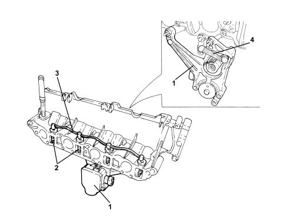
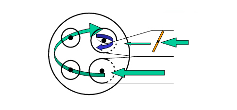

GENERAL REMARKS - INTAKE AND EXHAUST MANIFOLDS
- Path
- Descriptions > 10 ENGINE > 1072 INLET AND EXHAUST MANIFOLDS > GENERAL REMARKS - INTAKE AND EXHAUST MANIFOLDS
- Kind
- system description
- Applies to
- engines: 1.9 JTD 16v; all production periods
- Interactive page
- https://sloeber94.github.io/elrnDB-fCrm/en/#/194002414
Applies to: engines: 1.9 JTD 16v; all production periods
INTAKE MANIFOLD SPECIFICATIONS
The four supplementary intake channels in the intake manifold contain continuously adjusted swirl valves.
Swirl valve operation takes place by means of an electronic actuator. The actuator moves a regulation rod that acts on the swirl valves by means of a gear mechanism.
The swirl valves are interconnected by a linkage.
Due to the geometrical shape of the four supplementary intake valves and the swirl valves, cool gases set up a vortex and are optimally directed to the combustion chamber. In this way, optimum cylinder filling is achieved.
Continous regulation of the swirl valves leads to optimal turbulence for each engine rpm and load range.

1. Swirl valve electric control actuator
2. Swirl valves
3. Swirl valve connection linkage
4. Swirl valve control lever
By regulating the swirl valves, it is possible to adapt cool gas turbulence in the combustion chamber to the respective engine load conditions.
The high turbulence set up in the combustion chamber when the swirl valves are closed allows an outstanding injected fuel mixture to be obtained at a low rpm.
Due to this outstanding mixture of fuel and cool gases, polluting emissions are considerably decreased.

At a higher rpm, the swirl valves are fully opened. The cool gas turbulence is reduced and the filling level is increased.
A higher level of cylinder filling leads to an increase in engine power.
Applies to: engines: 2.4 JTD 20v; all production periods